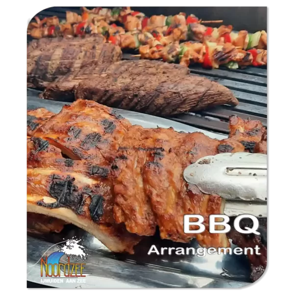
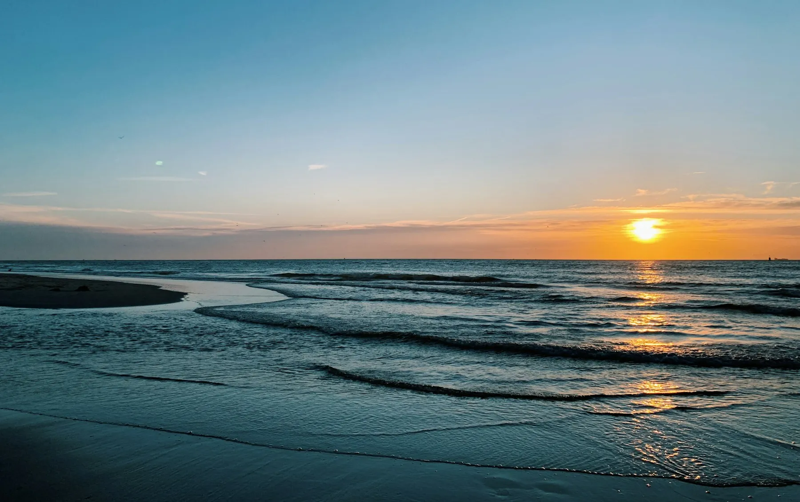
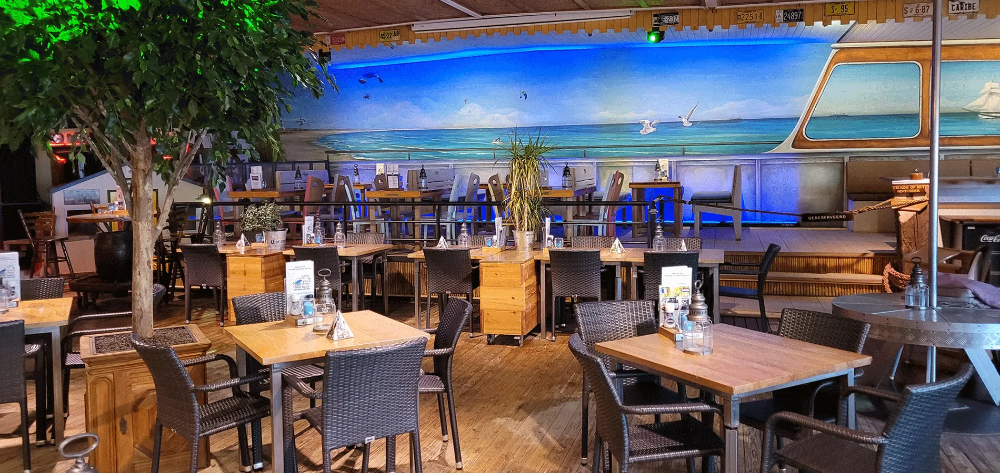
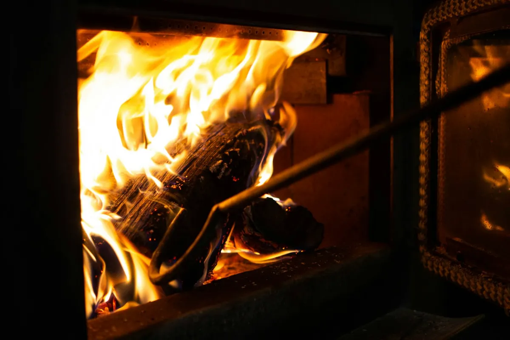
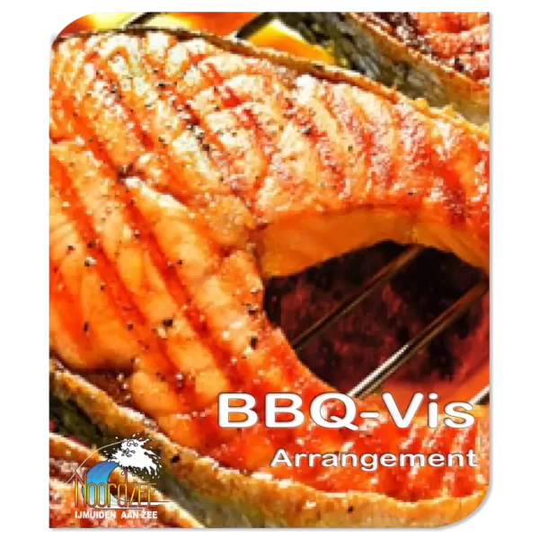
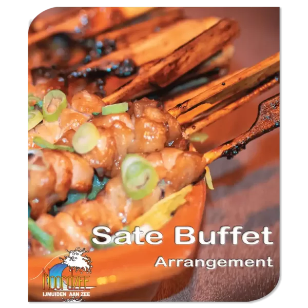
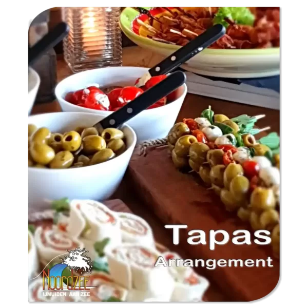
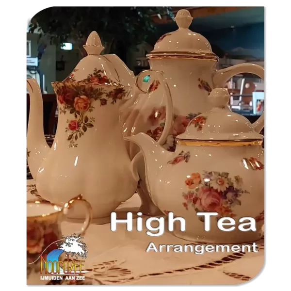
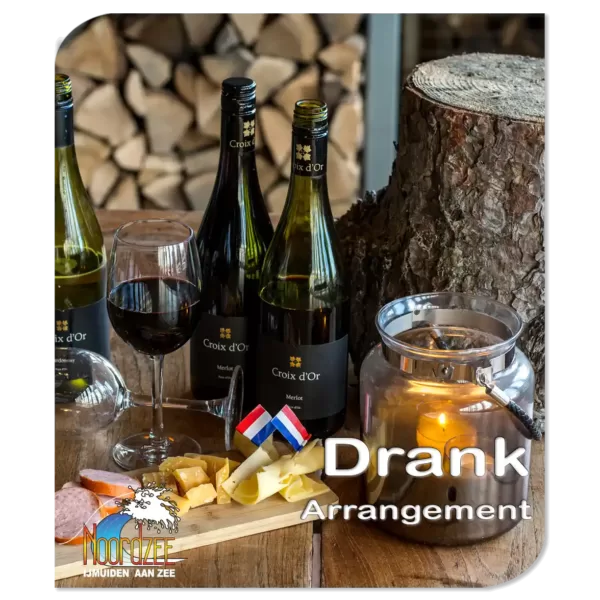
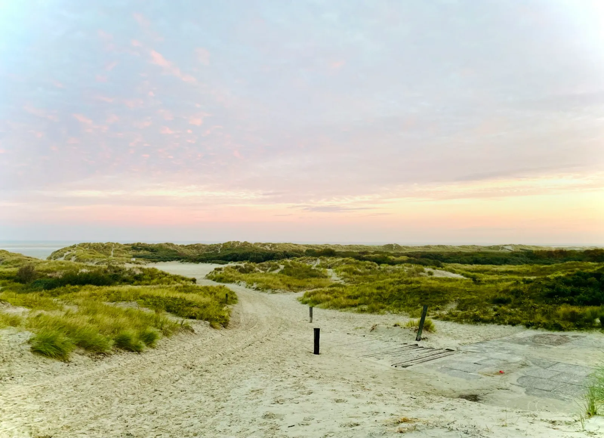

BBQ Noordzee € 27,50
- Keuze uit 4 items van de bbq
- 4 salades
- Friet en sausjes
- Stokbrood met kruidenboter en aioli
Uiteraard ook vegetarisch mogelijk.

Beleef het mee, het goede strandleven begint bij
Strandpaviljoen op het Kennemerstrand in IJmuiden, sinds 1977. Ontbijt, lunch, diner, feesten, vergaderingen en bedrijfsuitjes.
Met ruim 60 jaar hoort Paviljoen Noordzee bij de oudste horecazaken op het Kennemerstrand van IJmuiden. Sinds 1977 is het paviljoen van Ursula, Frans en David Koks, die het familiepaviljoen hebben uitgebreid tot wat het nu is.
Een strandpaviljoen waar jong en oud zich thuis voelt, en waar bijna alles mogelijk is: van een kop koffie na het uitwaaien tot een feest met de hele zaak. We zijn bijna het hele jaar door open en heten u van harte welkom voor een hapje en een drankje.
Sinds 1977, bijna het hele jaar door geopend!


Ontbijt, lunch en diner aan zee. Zit u op het terras? Bestel aan de bar met uw tafelnummer en reken binnen af; wij brengen het eten aan tafel.
broodjes wit/bruin, te bestellen tot 17:00 uur
geserveerd met brood & boter
Exclusief bij Noordzee
bij onze salades serveren wij brood & boter
wordt geserveerd met frites óf gebakken aardappelen
Donderdag Schnitzeldag!
Elke donderdag een schnitzelschotel met € 2,50 korting.
bij te bestellen
Tip van Koks: het menu van de week. Zie het bord óf vraag de bediening.
spelen kan bij ons ook binnen
voor bij je bakkie
specialiteiten!
specialiteiten!
koud
warm
van de tap! glas / ½ L
Voedselallergie? In onze producten kunnen verschillende soorten allergenen aanwezig zijn. Heeft u een vraag over de samenstelling van een product? Vraag het een medewerker, we helpen u graag.
Menukaart als PDF: Nederlands Deutsch English
Voor groepen vanaf 25 personen: barbecues, buffetten, tapas, high tea en drankarrangementen. Prijzen per persoon. Vraag een offerte aan, dan maken we het samen op maat.

Uiteraard ook vegetarisch mogelijk.


Uiteraard ook vegetarisch mogelijk. Vraag ook naar BBQ Noordzee de Luxe.
Vanaf 40 personen ook een hele gegaarde zalm.
Vanaf 40 personen ook een hele gegaarde zalm.



Recepties en afscheidsceremonies. 2 uur onbeperkt:
Feesten. 4 uur onbeperkt, met hetzelfde aanbod als #1, plus:
Beide arrangementen zijn per uur per persoon te verlengen in overleg. Sterke drank in overleg tijdens de offertebespreking. Vraag naar onze combideal met BBQ.
Uw arrangement uitbreiden met sport en spel? Dat kan via Eventmaker, zie de activiteiten.
Offerte aanvragen
Alles is mogelijk bij Noordzee
Een vergadering, een buffet of een groot feest. Het hele paviljoen is te huur voor feesten en partijen, maar ook een deel, of buiten aan de buitenbar.
De schuifwand kan dicht, zodat u een eigen ruimte heeft.
Zonder tafels en stoelen, met een danspaal en een houtkachel die lekker warm en knus is in de winter.
Wij zetten het terras rondom de buitenbar voor u af.
Buiten feestvieren, met de voeten in het zand.
Of wat u ook maar wilt vieren: bespreek uw wensen met ons. Beschikbaar: tv-scherm, beamer en microfoon.
Een grote, ruime zaal met beamer, beeldscherm, HDMI-aansluiting, wifi en 2 microfoons. De zaal heeft een eigen bar en toiletten en kan worden afgesloten, zodat u niet gestoord wordt door andere gasten van het restaurant.
Uw vergadering is uit te breiden met dranken, buffetten en activiteiten.
Offerte aanvragenVia een evenementenbureau organiseert u een sportieve activiteit, met Paviljoen Noordzee als uitvalsbasis: eerst iets drinken, dan op pad, en de dag gezellig afsluiten met bijvoorbeeld een BBQ of een buffet.
“Mag ik jullie allen hartelijk danken voor een prachtige middag en een heerlijke avond! Iedereen heeft erg genoten en alles was tip top verzorgd!”
Rijkswaterstaat, Programma’s Projecten en Onderhoud
“We hebben enorm genoten. Niet alleen van de borrelhapjes en het heerlijke diner, maar ook van de professionele aandacht en verzorging van en door het team van de bediening.”
Team van de provincie Noord-Holland
“Wij hebben zondag een fantastische middag gehad. Heerlijk eten en een heel prettige, attente en betrokken bediening. Wij zullen jullie zeker aanbevelen.”
Caroline, Baan en Kees
“De avondmaaltijd werd daar 7 dagen per week als buffet neergezet. De variatie aan eten was zonder meer goed en het eten was lekker. Het personeel stond altijd vriendelijk voor ons klaar.”
Fabricom Offshore Service BV, tijdens het Prinses Amalia Windmolenpark-project (2014 en 2015)

In het strandseizoen reserveert u bij ons een luxe ligbed, zachte kussens en een windscherm.
Bel 06-29497363 voor een ligbedPaviljoen Noordzee werkt samen met Stichting Strandspektakel IJmuiden en de IJmuider Reddingsbrigade.
Korps Mariniers, IJmuider Zuidpier Zeevis Vereniging, Stammtisch Unimogs en Groter, en De Noordwester.
Een tafel reserveren, een feest aanvragen of een offerte voor een arrangement? Mail of bel ons.
Voor reserveringen en feestaanvragen: reservering@paviljoennoordzee.nl
1 november 2026 tot 1 maart 2027
| Maandag t/m woensdag | gesloten |
|---|---|
| Donderdag | 12:00 – 18:00 |
| Vrijdag | 11:00 – 20:00 |
| Zaterdag & zondag | 11:00 – 21:00 |
De keuken sluit een uur voor sluitingstijd.
Paviljoen Noordzee+31 (0)255 51 40 04
post@paviljoennoordzee.nl
Volg ons op Facebook (@paviljoennoordzee) en Instagram (#paviljoennoordzee).